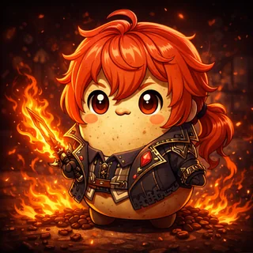

Twitch
MrTeeMan
Founder, organiser, and the most likely person to make the stream happen at all.
Founder, organiser, and the most likely person to make the stream happen at all.

Variety gamer energy, little respect for genre boundaries, and a healthy amount of unpredictability.

Rare appearances, maximum grind tolerance, and no visible fear of long-haul progression.